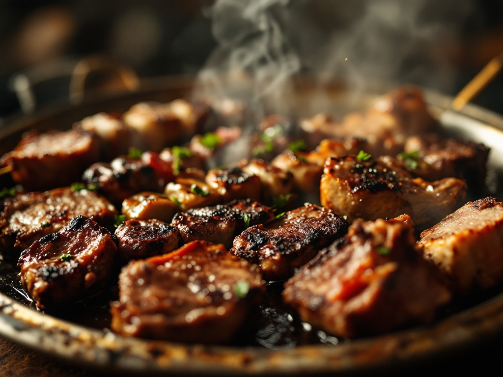
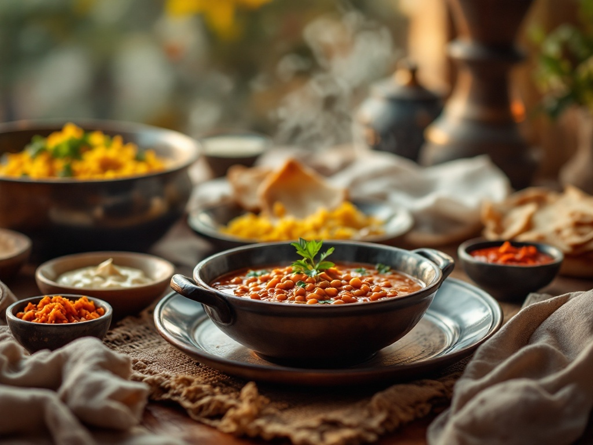
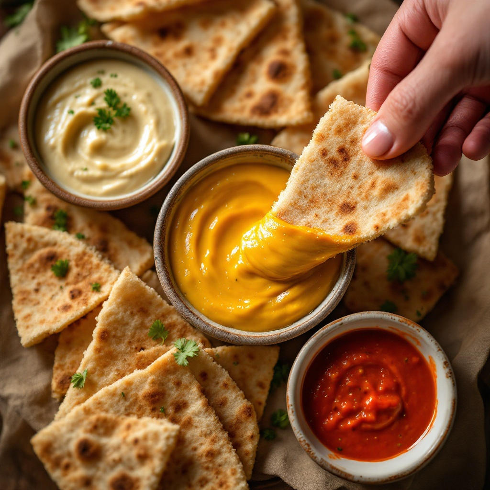
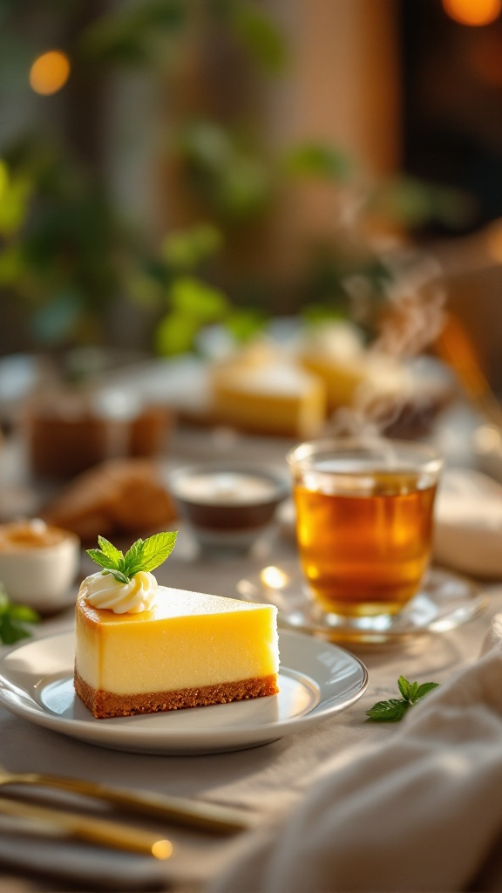
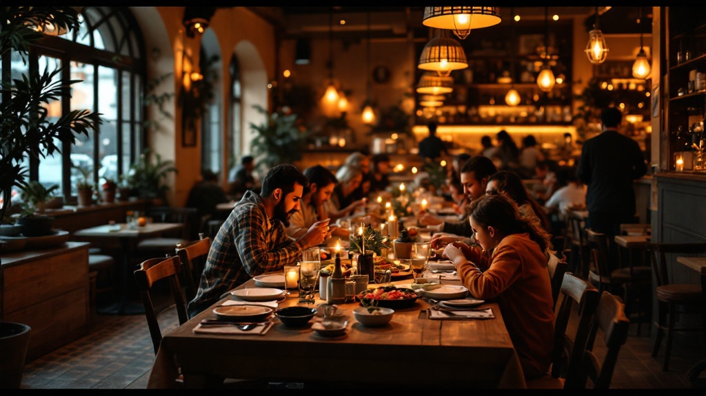

Hawawshi
9 €Pita dorata e croccante, ripiena di carne macinata speziata e cotta alla brace. Da mangiare con le mani, ancora calda.
Cucina egiziana, alla brace · Milano
Una delle poche cucine egiziane autentiche a Milano.
La Grigliata Baraka fumante al centro, la pita, il riso giallo, le salse e il baklava attorno — come una cena appena servita, da spartire fino all'una di notte.
Una cena egiziana da spartire, servita come sa farlo Al Baraka.
Il cuore alla brace
È il motivo per cui si torna. Carne alla brace, spiedini fumanti e l'hawawshi croccante — porzioni pensate per stare al centro della tavola e passare di mano in mano.

Il piatto firma
Un chilo di agnello alla brace su un unico vassoio: tagli diversi, marcati dal fuoco, con la pita e il riso a fare da contorno. La ordini in due, la finisci in quattro. È la nostra idea di generosità.
Pita dorata e croccante, ripiena di carne macinata speziata e cotta alla brace. Da mangiare con le mani, ancora calda.
Cotto sulla brace viva, girato a mano finché non prende il giusto colore. Tenero dentro, marcato fuori.
Il vassoio da 1 kg: tagli misti di agnello, spiedini e verdure alla brace. La grigliata da spartire per eccellenza.
Attorno alla grigliata
Quello che accompagna la brace e riempie la tavola. Piatti da mettere in mezzo e prendere un po' per uno, fino all'ultimo pezzo di pita.

Da mettere in mezzo
Calda e vellutata, come la facciamo a casa. Il modo giusto per aprire una cena d'inverno prima che arrivi la brace.
Le tre salse
Il trio che accompagna tutto: la tahini morbida, la salsa all'aglio decisa e quella piccante rossa per chi vuole scaldarsi. Si intinge la pita e non ci si ferma più.

Come si chiude una cena
Il baklava è quello di cui parlano tutti. Ma la tavola dei dolci non finisce lì — e il tè alla menta arriva versato dall'alto, come si deve.
Il baklava da urlo
Lo prepariamo noi: la pasta fillo croccante, le noci, il miele che tiene tutto insieme. Tagliato a rombi, ancora lucido. È il dolce che chiude il pasto e fa promettere di tornare.

Cremosa, con il biscotto Lotus caramellato. Servita accanto al tiramisù per chi non sa scegliere.
Caldo, dolce, con la menta fresca. Versato dall'alto dalla teiera di metallo — un piccolo rito di fine cena.

La sala
La sera la sala si riempie di famiglie e gruppi di amici. Luce ambrata, chiacchiere, piatti che passano di mano. Ci trovi anche dopo mezzanotte, quando la maggior parte delle cucine ha già chiuso.
Perché tornano
Non inventiamo nomi né storie. Questi sono i numeri reali di chi ha mangiato da noi e ha lasciato un giudizio.
246 recensioni
Valutazione media reale · media online
Il tema che ricorre di più: agnello e grigliata cotti bene, porzioni abbondanti.
Il baklava è quello che resta più impresso, insieme al tè alla menta.
Un servizio attento e cordiale, che mette a proprio agio anche i nuovi arrivati.
Si mangia tanto e bene senza spendere una fortuna — un motivo per tornare.
Carne eccellente, dolci fatti in casa e un'accoglienza sincera: è così che le persone raccontano una cena da noi.
Sintesi onesta dei temi ricorrenti nelle recensioni. Nessun nome o citazione inventati.
Cucina egiziana a Milano
Non siamo una gastronomia mediorientale qualsiasi. Cuciniamo egiziano, come si fa a casa: alla brace, con l'hawawshi e la grigliata al centro della tavola.
Niente alcolici, niente scorciatoie. Solo carne cotta sul fuoco, dolci preparati da noi e un tavolo aperto tutti i giorni, fino all'una di notte — a due passi dalla fermata Brenta.
Visita e prenota
Chiamaci per prenotare la tua grigliata da condividere. Facciamo anche asporto.
Tutti i giorni · 11:00 – 01:00
Zona Brenta, Milano
A due passi dalla fermata MM Brenta.
Indirizzo indicativo: Viale Brenta 14 — da confermare con il locale.
Prenota ora
Chiamaci: ti troviamo il posto giusto per la tua grigliata, anche a tarda sera.
329 973 9141Tocca per chiamare, o digita il numero
Chiama per prenotareAperti tutti i giorni, 11:00 – 01:00. Facciamo anche asporto.